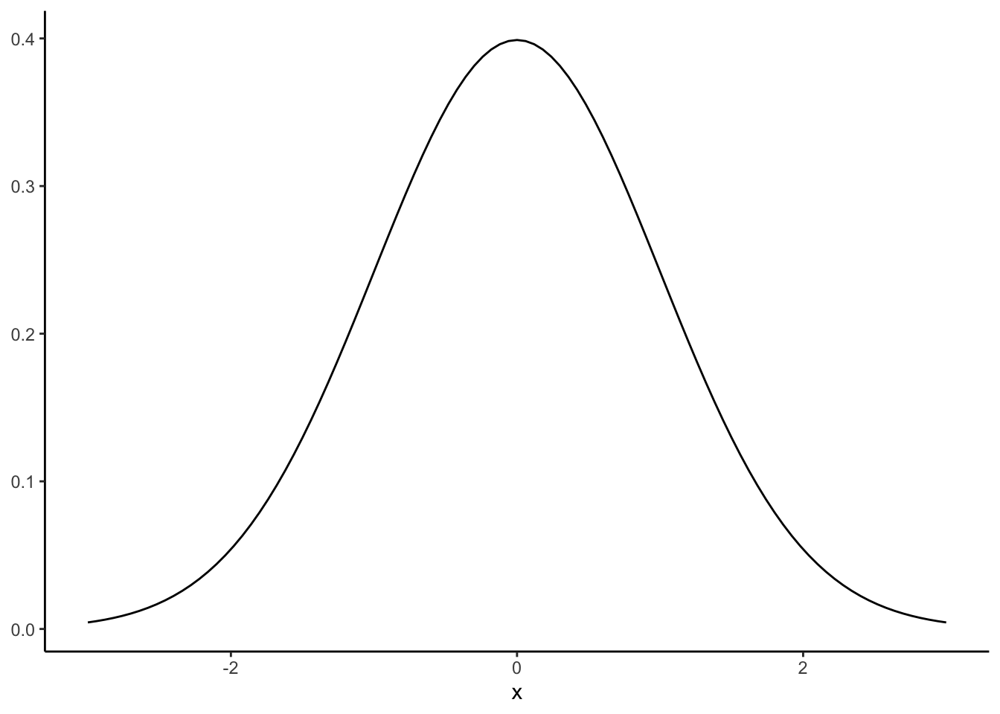
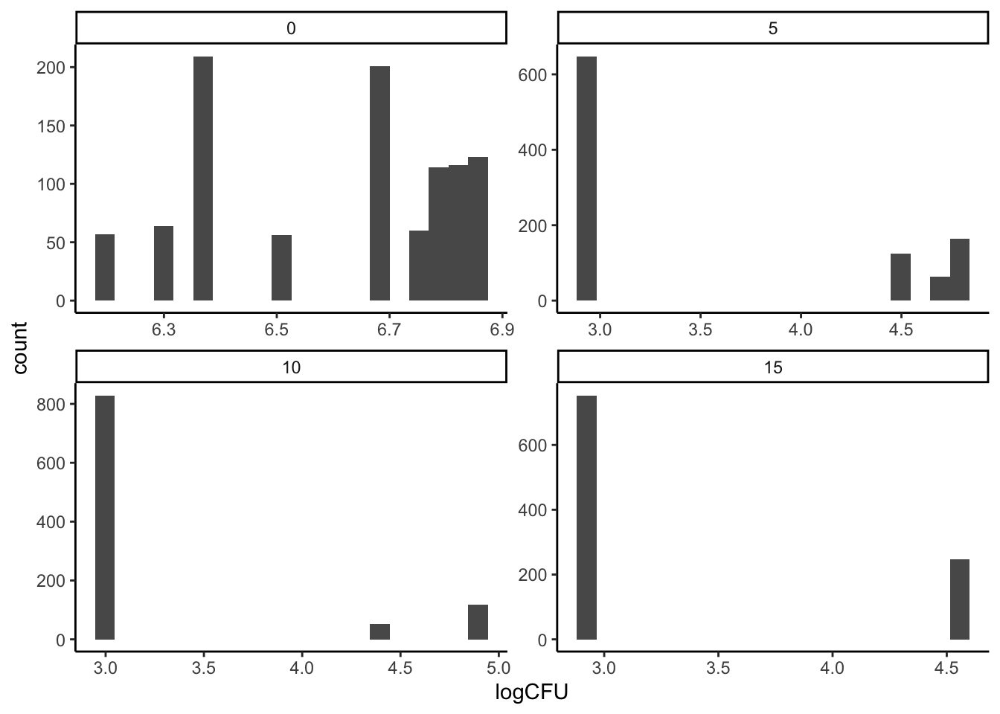

8 Inference from data
Welcome back! I know everyone has just been counting the days to get back in the classroom. Me too!
This week we’re going to be starting on the second half of the class, in which we move from the basics of how to code for research–learning how R works, learning basic concepts of control flow and data wrangling–to the why of our coding work: analyzing data. This will be the focus of the rest of the class! In the last few weeks you actually started to learn a lot about how to do exploratory and descriptive data analysis: how to make basic, useful exploratory plots, how to generate summaries of data that tell you something about what you’ve got. You also have spent some time putting together your first data-analysis report, which made use of those skills.
So this week we will start with a summary of what inferential data analysis is, and why we might want to employ it in our work. We’ll start off with an application to motivate the discussion: looking at some data from Michael Wesolowski’s thesis on Salmonella inhibition with ethanol vapor. Then, we’ll step back and talk about how small experiments like this one can be used for inferring knowledge about more general situations. We’ll talk about heuristic (traditional) statistical approaches and resampling approaches to inference. Finally, we’ll talk about the counterexample of how we usually learn and think about statistical inference in science, and how it contrasts with what we’re doing here.
8.1 Motivation: inference from experiments
Today we’re going to work with a subset of data from Michael Wesolowski’s 2017 thesis work on the effect of ethanol vapor on Salmonell spp. on produce. Michael ran a number of experiments, but we are going to consider just the experiment on the effect of exposure time on Salmonella CFUs on tomatoes. This is the first column of data in the Thesis Data Mastersheet.xls data file which you can download from a few places on Canvas, in particular the Files/Week 10 directory in the course setup package.
head(tomato_salmonella)## # A tibble: 6 × 9
## `Time (sec)` `Trial #` Replicate Plate…¹ Count Addit…² Total…³ Total…⁴ Log C…⁵
## <chr> <dbl> <chr> <dbl> <chr> <dbl> <dbl> <dbl> <dbl>
## 1 0 1 A 1 352 0.01 1.10e-4 3.20e6 6.51
## 2 0 1 A 2 51 0.001 1.10e-5 4.64e6 6.67
## 3 0 1 B 1 52 0.001 1.10e-5 4.73e6 6.68
## 4 0 1 B 2 75 0.001 1.10e-5 6.82e6 6.83
## 5 0 1 C 1 53 0.001 1.10e-5 4.82e6 6.68
## 6 0 1 C 2 55 0.001 1.10e-5 5.00e6 6.70
## # … with abbreviated variable names ¹`Plate #`, ²`Additional Dilution`,
## # ³`Total Dilution`, ⁴`Total CFU/mL`, ⁵`Log CFU/mL`skimr::skim(tomato_salmonella)| Name | tomato_salmonella |
| Number of rows | 72 |
| Number of columns | 9 |
| _______________________ | |
| Column type frequency: | |
| character | 3 |
| numeric | 6 |
| ________________________ | |
| Group variables | None |
Variable type: character
| skim_variable | n_missing | complete_rate | min | max | empty | n_unique | whitespace |
|---|---|---|---|---|---|---|---|
| Time (sec) | 0 | 1 | 1 | 2 | 0 | 4 | 0 |
| Replicate | 0 | 1 | 1 | 1 | 0 | 3 | 0 |
| Count | 0 | 1 | 1 | 5 | 0 | 30 | 0 |
Variable type: numeric
| skim_variable | n_missing | complete_rate | mean | sd | p0 | p25 | p50 | p75 | p100 | hist |
|---|---|---|---|---|---|---|---|---|---|---|
| Trial # | 0 | 1 | 2.00 | 0.82 | 1.00 | 1.00 | 2.00 | 3.00 | 3.00 | ▇▁▇▁▇ |
| Plate # | 0 | 1 | 1.50 | 0.50 | 1.00 | 1.00 | 1.50 | 2.00 | 2.00 | ▇▁▁▁▇ |
| Additional Dilution | 0 | 1 | 0.08 | 0.04 | 0.00 | 0.08 | 0.10 | 0.10 | 0.10 | ▂▁▁▁▇ |
| Total Dilution | 0 | 1 | 0.00 | 0.00 | 0.00 | 0.00 | 0.00 | 0.00 | 0.00 | ▂▁▁▁▇ |
| Total CFU/mL | 0 | 1 | 1132885.96 | 2181060.41 | 909.92 | 909.92 | 909.92 | 450864.42 | 7279344.86 | ▇▁▁▁▁ |
| Log CFU/mL | 0 | 1 | 4.17 | 1.55 | 2.96 | 2.96 | 2.96 | 5.19 | 6.86 | ▇▁▂▁▃ |
The key independent variable in this experiment (one part of the thesis) is the time for which the tomatoes were exposed to ethanol vapor–Time (sec)–and the dependent (outcome variable) is the total number of colony forming units/mL, which we will express on a log scale–Log CFU/ml. The question Michael had was whether the treatment decreased the number of colony-forming units (CFUs) on the surface of the tomatoes. We can get an intuition for the answer to that question by looking at the mean and SD for each time exposure:
tomato_salmonella %>%
group_by(`Time (sec)`) %>%
summarize(mean = mean(`Log CFU/mL`),
sd = sd(`Log CFU/mL`))## # A tibble: 4 × 3
## `Time (sec)` mean sd
## <chr> <dbl> <dbl>
## 1 0 6.60 0.220
## 2 10 3.25 0.671
## 3 15 3.32 0.686
## 4 5 3.53 0.831It certainly looks like any time exposure to ethanol vapor reduces the number of CFUs on the tomatoes. It isn’t so clear that longer exposures lead to further decreases, though.
We have two questions we might want to answer from this simple example:
- What are the confidence intervals around our point-estimates of group means?
- Is the difference we observed important? Are we seeing a real effect?
Let’s use what we’ve learned about simulation and random sampling to answer each of these questions using a coding approach, and then circle back to a statistical heuristic approach.
8.2 “A resampling approach” to statistics
Today we are going to learn some approaches to thinking about inference with data that don’t rely on assumptions about formula or rules. These are called “resampling” approaches to statistics, and they instead rely on us being a bit clever about using computational power to do simulations onour datasets. This sounds fancy and intimidating, and I am pleased to say that while it may be a little bit alien, it is not!
As a caveat, however, I will note that we are going to just learn about the basics of these approaches today (and in this class in general). There are whole books on this topic, and more sophisticated simulationist approaches like Bayesian statistics are going to be the most precise and powerful models (for example see McElreath 2020). My hope is that giving you a taste of a simulationist approach shows you how powerful you are once you know the basics of coding for research!
8.2.1 Confidence intervals around group means (the “bootstrap”)
The first questions we have is about our sample means, which are “point estimtes” for the actual, population mean. What am I saying here? Well, let’s take a minute to unpack the idea of a point estimate, and then apply it to our example.
First, let’s imagine we have the normal distribution:
p <-
ggplot(data = data.frame(x = c(-3, 3)), aes(x)) +
geom_function(fun = dnorm, n = 101, args = list(mean = 0, sd = 1)) +
labs(y = NULL) +
theme_classic()
p
This is our population distribution. We know that its true population mean is 0, and its true population standard deviation is 1, by definition. Now, let’s pull 3 samples of 100 observations from the normal distribution with mean = 0 and sd = 1, and take a look at where they go on the graph:
normal_samples <- tibble(x1 = rnorm(100),
x2 = rnorm(100),
x3 = rnorm(100))
skim(normal_samples)| Name | normal_samples |
| Number of rows | 100 |
| Number of columns | 3 |
| _______________________ | |
| Column type frequency: | |
| numeric | 3 |
| ________________________ | |
| Group variables | None |
Variable type: numeric
| skim_variable | n_missing | complete_rate | mean | sd | p0 | p25 | p50 | p75 | p100 | hist |
|---|---|---|---|---|---|---|---|---|---|---|
| x1 | 0 | 1 | -0.14 | 0.94 | -2.19 | -0.83 | -0.19 | 0.59 | 2.22 | ▃▆▇▆▁ |
| x2 | 0 | 1 | -0.09 | 0.97 | -2.32 | -0.88 | 0.06 | 0.66 | 2.07 | ▂▆▆▇▂ |
| x3 | 0 | 1 | 0.03 | 0.97 | -2.44 | -0.53 | 0.07 | 0.74 | 2.43 | ▁▃▇▅▁ |
We can see what is happening here by plotting these onto our normal distribution:
p +
geom_vline(xintercept = mean(normal_samples$x1), color = "red", size = 0.75) +
geom_vline(xintercept = mean(normal_samples$x2), color = "red", size = 0.75, linetype = "dashed") +
geom_vline(xintercept = mean(normal_samples$x3), color = "red", size = 0.75, linetype = "dotted") 
Even though our samples are coming from the exact same population, they have different means (and standard deviations) because of sampling error. Although, as a side note, I will say that “error” makes it sound like something we can fix–in fact, this variation is fundamental and cannot be avoided.
To conclude: even when we are sampling from a perfectly defined and known population, our samples will only approximate that population. But in the long term, if we draw enough samples they will end up in the limit being unbiased approximations. Armed with that knowledge, let’s return to our example.
8.2.1.1 A bootstrapping example
In this example, for each exposure-time treatment, we have 18 observations (with some more internal replication structure that we will ignore here). Thus, when we calculate our point-estimate summary statistics, we are basing that estimated group mean (or SD or whatever) on those 18 observations. But how would it change if we had 18 other observations? What we know is our sampling-error biased mean, and what we want to get a better picture of is the population these means came from. In our explanation above, what this is equivalent to is trying to infer the shape of the normal distribution with only 1 of the 100-sample draws (that we showed were full of errors). How can we do this?
The answer here is that we can use an approach called “resampling” to build a simulated population from our observed sample, and then use that population to understand how representative our observed point-estimate statistics are. This sounds complicated, but in practice it is very intuitive. The description from Bruce and Bruce (2017) for the steps to do this is quite clear (paraphrased here in almost pseudocode):
- From your sample, draw a sample of the same size with replacement.
- Record the mean, SD, or other relevant statistic from your “resampled” sample and record the information.
- Repeate steps 1-2 a large number of times (a typical number is \(N=10,000\), but this can vary depending on computational intensivity)
- Use the new dataset of statistics to calculate a confidence interval or to draw boxplots or histograms to compare to your point estimate.
The reason this approach works well is the “with replacement” bit. This means that, rather than just shuffling our data, we will be sometimes drawing the same sample multiple times. Over the long run, this creates a population that would plausibly generate our sample, as shown in Bruce and Bruce (2017):

Schematic example of bootstrapping (Bruce and Bruce 2017, 58)
Again, this sounds like we’re doing something mystically complicated, but the steps above are each things we already know how to do. Let’s take a look in practice, with our dataset. We have 4 different means we want to resample, one for each of the different treatments. We’ll write a little for loop to do this for us (although you could check out the boot package for more functionality).
# Here we set a number of iterations for the bootstrap. If your computer is slower, consider setting this to 100 just for the example.
boot_reps <- 1000
# for each step of the loop, we will generate a new sample for each of our
# treatments and take its mean
booted_means <- tibble(`0` = numeric(boot_reps),
`5` = numeric(boot_reps),
`10` = numeric(boot_reps),
`15` = numeric(boot_reps))
for(i in 1:boot_reps){
this_loop_means <- list()
# for each step, we will make our lives easier (in terms of typing) by stepping through a loop of the treatments
for(time in c(0, 5, 10, 15)){
tomato_salmonella %>%
filter(`Time (sec)` == time) %>%
pull(`Log CFU/mL`) %>%
sample(x = ., size = 18, replace = TRUE) %>% # this is the "bootstrap" step, note replace = TRUE
mean %>%
c(this_loop_means, .) -> # don't forget to store the results of the loop somewhere!
this_loop_means
}
booted_means[i, ] <- this_loop_means
}Now we have a big (10,000 row) data frame, in which each row is a plausible simulation of means we could have gotten if our experimental sample had been different, but drawn from the same population! Let’s go ahead and do a little basic data exploration on this dataset. I think the easiest way to look at this is using box plots:
booted_means %>%
mutate(boot_id = row_number()) %>%
pivot_longer(names_to = "exposure_time", values_to = "logCFU", -boot_id) %>%
mutate(exposure_time = as.numeric(exposure_time)) %>%
ggplot(aes(x = exposure_time, y = logCFU, group = exposure_time)) +
geom_boxplot() +
geom_point(data = tibble(exposure_time = c(0, 5, 10, 15),
logCFU = tomato_salmonella %>%
group_by(`Time (sec)`) %>%
summarize(mean = mean(`Log CFU/mL`)) %>%
pull(mean)),
color = "red") +
theme_classic()
It looks like while with no ethanol vapor we have quite a narrow range of Salmonella CFUs, with exposure variation grows quite a bit! In addition, it seems like our good results for a 5-second exposure, while certainly not a fluke, are somewhat unexpectedly on the low end of CFUs we’d expect to observe if we ran the same study again. Similarly, our 15-second exposure appears to be somewhat pessimistic! Thus, sampling error might explain the odd trend we observe in our actual results of increased CFUs with increased ethanol vapor exposure.
We can look at this numerically as well:
# Actual observed means
tomato_salmonella %>% group_by(`Time (sec)`) %>% summarize(mean = mean(`Log CFU/mL`)) %>% pull(mean)## [1] 6.604979 3.247841 3.315539 3.526595# And our bootstrapped ranges
summary(booted_means)## 0 5 10 15
## Min. :6.444 Min. :3.042 Min. :2.959 Min. :2.959
## 1st Qu.:6.571 1st Qu.:3.408 1st Qu.:3.143 1st Qu.:3.225
## Median :6.608 Median :3.527 Median :3.248 Median :3.315
## Mean :6.605 Mean :3.529 Mean :3.247 Mean :3.315
## 3rd Qu.:6.639 3rd Qu.:3.644 3rd Qu.:3.353 3rd Qu.:3.405
## Max. :6.740 Max. :4.126 Max. :3.852 Max. :3.857This tells us that, while our results are significant, we should have some caution in making strong inferences about a time-order effect. As responsible scientists, reporting these kinds of ranges will be very valuable for our audiences, letting them understand the context in which our reported results originate.
8.2.1.2 Advantages of the bootstrap
You may ask yourself why do this kind of work to generate a confidence interval, when we already have a formula for that: \(CI = \bar{x} ± 1.96*se\), where \(se = \sigma/\sqrt{n}\) is the standard error of the mean. We can alter this for small samples by replacing \(1.96\) with the 95th-percentile value for the appropriate \(t\)-distribution. But this approach assumes that you understand the underlying random (“stochastic”) process that generates your data–this is called a parametric approach because it assumes that you know the function and parameters (the normal distribution) that generates your observations.
Hold on, what did I just say? The above means that we are assuming that a bell-shaped curve (normal or \(t\)) generated our obesrvations. If we drew enough, we’d end up seeing that familiar normal bell-curve.
This is a very strong assumption that, prior to wide availability of computational power, was necessary. But it’s not a good assumption. Let’s take a quick look at our data and see if it looks normal:
# set your boot reps to something appropriate
boot_reps <- 1000 # Again, if your computer is slow consider setting this to 100 instead just for the example
boot_samples <- tibble(boot_id = 1:boot_reps) # this is just a place to put the observations
for(time in c(0, 5, 10, 15)){
tomato_salmonella %>%
filter(`Time (sec)` == time) %>%
pull(`Log CFU/mL`) %>%
sample(x = ., size = boot_reps, replace = TRUE) %>%
cbind(boot_samples, .) -> # don't forget to save it
boot_samples
}
boot_samples %>%
rename(`0` = 2, `5` = 3, `10` = 4, `15` = 5) %>%
pivot_longer(names_to = "exposure_time", values_to = "logCFU", -boot_id) %>%
mutate(exposure_time = as.numeric(exposure_time)) ->
boot_samples
boot_samples %>%
ggplot(aes(x = logCFU)) +
geom_histogram(bins = 20) +
facet_wrap(~exposure_time, scales = "free") +
theme_classic()
This is plainly not data drawn from a normal distribution.
The advantage of the bootstrap is that it is nonparametric: it makes no assumptions about how the data are generated and works equally well for any kind of statistic or any kind of data. It just requires writing some pseudocode to properly generate the loop, and then you have an empirical distribution for your data. Neat!
8.2.2 Is that difference important (permutation tests)?
So far we have used resampling to mostly answer questions about our point-estimates: how reliable and stable are our sample statistics? But when we think about inference, we usually are trying to connect a cause to an effect. In our example, we might want to ask questions like:
- Does any ethanol vapor exposure reduce the number of CFUs on the surface of tomatoes?
- Are the differences among our treatments meaningful?
These are the kinds of questions that lead to testable hypotheses. In future classes, we are going to touch on models of statistical analysis like the linear model which give us formulas to deal with these questions. In particular, we might use ANOVA (ANalysis Of VAriance) to answer #1, and linear regression to answer the second question. But today we’re going to just use some raw computational power to do so.
8.2.2.1 Does ethanol vapor reduce the number of CFUs on the surface of tomatoes?
We already know that we have a total of 72 observations in our dataset, with 18 for each treatment. That means in one treatment we have no ethanol exposure, and we have increasing duration of ethanol-vapor exposure in the other treatments. Let’s calculate our point-estimates of the mean log CFUs for each treatment again:
tomato_salmonella %>%
group_by(`Time (sec)`) %>%
summarize(mean_CFUs = mean(`Log CFU/mL`))## # A tibble: 4 × 2
## `Time (sec)` mean_CFUs
## <chr> <dbl>
## 1 0 6.60
## 2 10 3.25
## 3 15 3.32
## 4 5 3.53It does certainly look like having no ethanol exposure leads to almost 3 orders of magnitude more CFUs (because we’re in log units) than any timed exposure to ethanol vapor. We can use basic logic to frame a counterfactual–“if ethanol exposure has no effect, would we see the same difference in log CFUs?” And our ability to manipulate data with code allows us to do exactly this!
Specifically, we are going to manipulate our data set so as to “redo” our experiment thousands of times. In each case, we are going to take our 72 observations–the measured log CFUs–and randomly reassign them to the 72 experimental conditions–our ethanol-vapor time exposures–that could have generated them. This will give us 18 new observations for each time treatment, for which we will take a new point-estimate mean. We will then repeat this many times (usually thousands) to get a distribution of permuted means. Finally, we will compare our actual observations of mean log CFUs to the permuted means to determine if our observations show a particularly extreme value.
Let’s see how this works in practice, and then we will return to outline the general steps of a Permutation Test from Bruce and Bruce (2017).
# first, just to show how this works, let's do it once:
permutation_example <- tomato_salmonella %>%
select(`Time (sec)`, `Log CFU/mL`) %>%
bind_cols(sample(tomato_salmonella$`Time (sec)`, replace = FALSE)) %>% # unlike bootstrapping we use replace = FALSE to just permute our sample
rename(actual_time = 1, logCFU = 2, permuted_time = 3)
permutation_example## # A tibble: 72 × 3
## actual_time logCFU permuted_time
## <chr> <dbl> <chr>
## 1 0 6.51 0
## 2 0 6.67 10
## 3 0 6.68 10
## 4 0 6.83 10
## 5 0 6.68 0
## 6 0 6.70 0
## 7 0 6.75 0
## 8 0 6.78 15
## 9 0 6.36 15
## 10 0 6.39 0
## # … with 62 more rows
## # ℹ Use `print(n = ...)` to see more rowsWe can then compare our observed means to our permuted means:
# Our actual observations
permutation_example %>%
group_by(actual_time) %>%
summarize(mean = mean(logCFU))## # A tibble: 4 × 2
## actual_time mean
## <chr> <dbl>
## 1 0 6.60
## 2 10 3.25
## 3 15 3.32
## 4 5 3.53# Our permuted observations
permutation_example %>%
group_by(permuted_time) %>%
summarize(mean = mean(logCFU))## # A tibble: 4 × 2
## permuted_time mean
## <chr> <dbl>
## 1 0 4.94
## 2 10 4.47
## 3 15 4.14
## 4 5 3.15It is immediately apparent that the difference between the groups is less extreme in or permuted example. This makes sense: some observations that actually came from the high-log CFU 0-second treatment have now been assigned to other times, while some from the low-log CFU treatments have been assigned to 0 seconds. But just a single comparison isn’t enough to prove anything. What we will do is repeat this experiment thousands of times:
permutation_reps <- 1000 # set this to 100 or so if your computer is slow for the demo
permuted_samples <- tibble(time = character(),
mean_logCFUs = numeric(),
permutation_id = numeric()
)
for(i in 1:permutation_reps){
permuted_times <- sample(tomato_salmonella$`Time (sec)`, replace = FALSE) # make a scrambled set of treatments
permuted_means <- tibble(time = permuted_times,
logCFUs = tomato_salmonella$`Log CFU/mL`) %>%
group_by(time) %>%
summarize(mean_logCFUs = mean(logCFUs)) %>%
mutate(permutation_id = i) # keep track of the permutation rep that generated these means
# Don't forget to actually store the reps of the for() loop!
permuted_samples <- bind_rows(permuted_samples,
permuted_means)
}Now we can ask the question we care about of these simulated data: how many times are our actual observed means different from the permuted means?
actual_means <- tomato_salmonella %>%
group_by(`Time (sec)`) %>%
summarize(mean_CFUs = mean(`Log CFU/mL`)) %>%
rename(time = 1, mean_logCFUs = mean_CFUs) %>%
mutate(time = as.numeric(time))
# For example, let's take a look at the 0-second treatment
permuted_samples %>%
mutate(time = as.numeric(time)) %>%
ggplot(aes(x = mean_logCFUs)) +
geom_histogram(bins = 20, color = "black", fill = "grey") +
geom_point(data = actual_means, aes(y = 0), color = "red") +
facet_wrap(~time) +
theme_classic()
It certainly looks like our observed values are more extreme than the permuted values!
We can get a numerical result for this by asking what proportion of our permuted results are larger or smaller than our observed values. For our purposes, we mostly care about just the untreated (0 second) tomatoes, and in this case we want to know if our observed mean logCFU values are larger than we’d expect to see if ethanol treatment weren’t having an effect.
actual_value <- actual_means %>% filter(time == 0) %>% pull(mean_logCFUs)
permuted_samples %>%
filter(time == 0) %>%
mutate(bigger = mean_logCFUs > actual_value) %>%
summarize(total_bigger = sum(bigger))## # A tibble: 1 × 1
## total_bigger
## <int>
## 1 0So we can see that in 1000 permuted samples we never saw average log CFUs larger than our observed value. This is strong evidence that ethanol treatment has some effect on Salmonella CFUs.
This approach is a specific application of that given by Bruce and Bruce (2017, 89, with some paraphrasing):
- Create a place to store your permuted results!
- Get your tidy dataset into a form that is amenable to using a
for()loop andfilter()andgroup_by()commands - Select the treatment variable you are investigating and then shuffle it (break the link between it and the observed variable)
- Calculate the statistic of interest for your analysis (usually a mean, but not necessarily) for each permuted group
- Remember to store your results and the relevant associated data (often storing a
permutation_idis useful, as we see below) - Repeat steps 2-5 some large number of times (often 1000, but it can be done more if you have the time and computational power)
- Compare the distribution of permuted results to your observed results
8.2.2.2 Are the differences among our treatments meaningful?
We don’t just care about a single treatment–we are interested in whether these is meaningful variation among all of our treatments. We are going to end today with a preview of the approach we can take towards this question, with a resampling/permutation approach to ANOVA.
ANOVA is a procedure you’ve learned about before, and it relies on the simple observation that, if some grouping variable (“treatment”) is important, there will be less variation within groups than there is between different groups. This intution is shown here (with the assumption of normality that is important for linear-model ANOVA statistics):

ANOVA diagram, from Gabriel Liguori
We are going to take a simple approach to answering the basic question of one-way ANOVA (where a single experimental variable is manipulated) using our resampled data. We already generated the data we need:
skim(permuted_samples)| Name | permuted_samples |
| Number of rows | 4000 |
| Number of columns | 3 |
| _______________________ | |
| Column type frequency: | |
| character | 1 |
| numeric | 2 |
| ________________________ | |
| Group variables | None |
Variable type: character
| skim_variable | n_missing | complete_rate | min | max | empty | n_unique | whitespace |
|---|---|---|---|---|---|---|---|
| time | 0 | 1 | 1 | 2 | 0 | 4 | 0 |
Variable type: numeric
| skim_variable | n_missing | complete_rate | mean | sd | p0 | p25 | p50 | p75 | p100 | hist |
|---|---|---|---|---|---|---|---|---|---|---|
| mean_logCFUs | 0 | 1 | 4.17 | 0.31 | 3.14 | 3.95 | 4.16 | 4.39 | 5.61 | ▁▇▇▂▁ |
| permutation_id | 0 | 1 | 500.50 | 288.71 | 1.00 | 250.75 | 500.50 | 750.25 | 1000.00 | ▇▇▇▇▇ |
We are going to compare the variation between groups in our actual sample to the variation between groups in our permutations. Our question is: is the observed variation between groups in actuality larger than it would be if the treatments were in fact meaningless? Our measure of variation is going to be simple variance: var(). Let’s see how this works:
# Our observed between-group variation
actual_means %>%
summarize(actual_variance = var(mean_logCFUs))## # A tibble: 1 × 1
## actual_variance
## <dbl>
## 1 2.64# Our permuted samples variation
permuted_samples %>%
group_by(permutation_id) %>% # we want to calculate variance within each permutation rep %>%
summarize(permuted_variance = var(mean_logCFUs)) %>%
ggplot(aes(x = permuted_variance)) +
geom_histogram(bins = 20, color = "black", fill = "grey") +
geom_point(aes(y = 0, x = actual_variance),
data = actual_means %>% summarize(actual_variance = var(mean_logCFUs)),
color = "red") +
theme_classic()
It is very apparent that the between-group variation in our real sample is much larger than any of the permuted between-group variations. I leave it to you to work out how to get the actual proportion of permuted samples that it is larger than.
As a final note, our permutation approach here does not require any of the assumptions that ANOVA typically makes. It does not matter that (as we showed above) our data is very non-normal. Instead, we have just reasoned out a way to examine sources of variation and compare them without making any assumptions of how or why our data is shaped how it is. However, please do note that working out these permutations for complex designs is quite difficult, and often computationally expensive. When your designs become more complex, better-designed models for simulation like Bayesian approaches (McElreath 2020) will work much better!
8.3 What do we know about statistics?
Finally, as we move into inference, I want to quickly review some ideas about statistical inference for scientific research that we typically take for granted.
We usually learn about statistics in conjunction with the scientific method in a research-methods or stats class:

The scientific method, image by J.R. Bee
(OK, I just can’t stop myself here, but this is one of the problems with our framework, as we’ll see below. The “Conclusion” in this cartoon actually is never reached in our idea of the Null Hypothesis Test, because all we can do is reject the null. This is counterintuitive and also not a necessary part of the scientific method.)
Typically, the basic stats classes we all take in our undergrad and grad careers follow a trajectory that is something like this:
- Talk about probability, usually using coin flips and dice rolls.
- Talk about “the scientific method”, as above.
- Introduce the idea of a hypothesis as a falsifiable statement. Concentrate on the counterintuitive but key idea of the null hypothesis.
- Talk about how to calculate key statistics about samples: central tendencies (means, medians, etc), variations (variance, deviation).
- Introduce probability distributions based on situations, typically:
- The binomial distribution for coin flips.
- The normal distribution for something like heights of students in the class. Don’t forget about the t-distribution, too…
- Maybe some more esoteric distributions like the Poisson distribution or the \(\xi^2\)-distribution.
- Introduce a bunch of heuristic calculations for how to take a sample you think comes from some distribution to the theoretical null distribution. These are statistical tests.
- This is where you usually learn about a menu of tests that you select based on how you believe your sample is distributed, your specific null hypothesis, etc, sch as the following:

Flowchart for selecting a statistical test, taken from the Nishimura Lab.
I think we have all seen a chart like this one, and we’ve all experienced the problem of asking a question like:
OK, I collected the data from my experiment. Now which is the right statistical test to conduct?
…
Uh…
In order to use this kind of chart, we need to make a lot of assumptions. We have to have a well-defined, falsifiable hypothesis (which we should really have before we start collecting data, but…), we need to understand the various tests enough to understand how to use them, and we need to understand the various assumptions underlying each test (this is the point at which we tend to fail the most often).
I don’t like these charts and this melange of statistical methods for all of these reasons! In particular, I dislike them because the assumptions that underlie the tests are important, but because they are rarely achieved in practice our tests are often failing in unpredictable ways. But even more so, I dislike them because, for many simple problems, we simply do not need to be going to all this trouble.
These types of charts, and the statistical tests they lead to, are the result of the need for heuristic approaches to statistics: as we talked about in Week 3, statistics originated in the 17th centuries with studies of probability in the absence of simulation. It was simply not practical to simulate “null” distributions, so early theorists developed very clever, computationally tractable approaches that avoided the need for simulation. But now we have computers. And we have learned to write simple code to make simulations for ourselves, which can often (much more intelligibly) help us explore our data and test our hypotheses.
So, on that note, and with what we’ve learned today, I look forward to trying out applications of this code with you on Thursday!